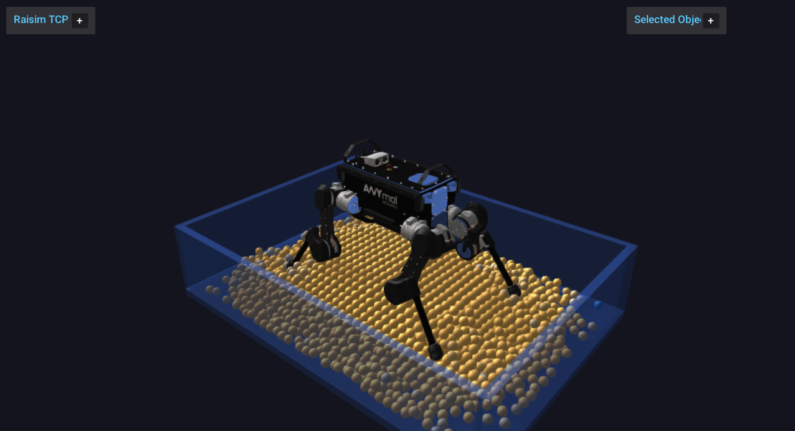

Granular Media
{kind=link}

raisim::GranularSystem is RaiSim’s native granular-material object. It is
designed for fast single-threaded simulation of many spherical grains without
creating one Sphere object per particle. All particles are owned by one
RaiSim object, and particle-particle contacts are resolved internally with a
discrete-element-style contact model.
The primary use case is robotics simulation where terrain compliance, sinkage,
surface flow, and foot or wheel interaction matter more than rendering every
grain as a full rigid body. The implementation favors deterministic,
single-threaded stepping and a compact memory layout. It should not change the
performance characteristics of ordinary rigid-body worlds unless a
GranularSystem is actually added to the world.
Overview
Granular media in RaiSim are represented by spherical particles with individual positions, velocities, angular velocities, radii, material ids, and optional fixed flags. The system supports:
Particle-particle normal contact.
Tangential friction with persistent contact history.
Rolling friction.
Linear and Hertz normal-force laws.
Optional short-range cohesion.
Horizontal ground-plane contact.
Axis-aligned container-box contact.
Height-map contact.
Rigid primitive contact with spheres, boxes, capsules, and cylinders.
Compound-object contact for primitive children.
Triangle-mesh contact by closest-point queries against mesh triangles.
Articulated-system contact for primitive collision bodies.
Particle insertion and removal during simulation.
Fixed particles for rough beds or anchored granular layers.
Periodic boundaries.
Binary save/load of granular state.
Rayrai/TCP visualization through instanced sphere visuals.
The granular solver is not a separate global solver. During a world step,
GranularSystem computes its own particle forces, applies equal-and-opposite
forces to dynamic rigid and articulated bodies, and integrates the granular
particles inside the regular RaiSim stepping sequence.
API Surface
The public construction API is exposed through raisim::World:
World::addGranularParticles(positions, radii, material)creates a granular system from explicit world-space particle centers and radii.World::addGranularBox(options, material)creates a deterministic regular packing inside an axis-aligned box.
After construction, GranularSystem owns all particles as one RaiSim object.
Particle-level APIs use local particle indices. Fixed particles report
BodyType::STATIC through getBodyType(localIdx); all other particles
report BodyType::DYNAMIC.
Data Model
Granular state is stored in structure-of-arrays form and can be inspected
without creating individual Sphere objects:
getNumParticles()returns the current particle count.getPositions(),getVelocities(), andgetAngularVelocities()return per-particle state arrays.getRadii()returns per-particle radii.getParticleMaterialIds()returns material ids used for friction mixing.getFixedParticleFlags()returns1for fixed particles and0for dynamic particles.getMaterial()andgetBoundaryMaterial()return the global material and boundary material currently used by the system.
The returned vectors are owned by the granular system. Treat references as short-lived views and reacquire them after particle insertion, removal, or checkpoint loading.
Creating Granular Media
Explicit particles
Use World::addGranularParticles when you already have particle positions
and radii. Positions are world-space particle centers.
raisim::World world;
world.setTimeStep(0.001);
world.setGravity({0.0, 0.0, -9.81});
std::vector<raisim::Vec<3>> positions;
std::vector<double> radii;
positions.push_back({0.0, 0.0, 0.10});
positions.push_back({0.09, 0.0, 0.18});
positions.push_back({0.18, 0.0, 0.10});
radii.assign(positions.size(), 0.04);
raisim::GranularSystem::Material material;
material.density = 1600.0;
material.normalStiffness = 5.0e4;
material.normalDamping = 25.0;
material.tangentialStiffness = 2.5e4;
material.tangentialDamping = 6.0;
material.friction = 0.8;
material.rollingFriction = 0.02;
material.substeps = 2;
auto* grains = world.addGranularParticles(positions, radii, material);
grains->setName("sand");
grains->setGroundPlane(0.0);
The constructor requires at least one particle, matching position/radius vector sizes, positive radii, positive density, and non-negative material parameters.
Packed boxes
Use World::addGranularBox for a deterministic regular packing inside an
axis-aligned box. The generated particle centers start at minCorner + radius
and advance by spacing along x, y, and z.
raisim::GranularSystem::BoxOptions bed;
bed.minCorner = {-0.6, -0.4, 0.0};
bed.maxCorner = { 0.6, 0.4, 0.25};
bed.radius = 0.02;
bed.spacing = 0.043;
bed.maxParticles = 5000;
auto* grains = world.addGranularBox(bed, material);
grains->setName("granular_bed");
Set BoxOptions::fixed = true to create a fixed rough bed. Fixed particles
keep zero velocity, ignore external particle forces, and still participate in
contacts as static grains. A common pattern is to create a bottom layer of
fixed particles, then add dynamic grains above it.
Runtime emission
Particles can be added during simulation. emitBox adds a deterministic
regular grid, while emitBoxRandom adds a deterministic jittered grid with
seeded radii in [minRadius, maxRadius].
grains->reserveParticles(20000);
grains->emitBox({-0.2, -0.2, 0.5},
{ 0.2, 0.2, 0.8},
0.018,
0.04,
1000,
{0.0, 0.0, -0.1});
grains->emitBoxRandom({-0.1, -0.1, 0.9},
{ 0.1, 0.1, 1.1},
0.014,
0.020,
0.045,
500,
1234);
Call reserveParticles before repeated emission to avoid allocation in the
hot loop. The random emitter is deterministic for the same seed and input
options; it is meant for reproducible scenes, not for non-deterministic
sampling.
For one-off insertion, use addParticle:
const size_t id = grains->addParticle({0.0, 0.0, 0.6},
0.02,
{0.0, 0.0, -0.1},
{0.0, 0.0, 0.0},
0,
false);
grains->setVelocity(id, {0.1, 0.0, 0.0});
addParticle returns the local index assigned at insertion time. If later
removals are possible, do not store local indices as permanent identifiers;
indices can shift when particles are compacted.
Material Parameters
GranularSystem::Material controls mass, contact forces, friction, and
substepping:
density: particle material density. Particle mass is computed from sphere volume,4/3*pi*r^3.normalStiffness: normal contact stiffness. Larger values reduce overlap but require a smaller time step or more substeps.normalDamping: normal relative-velocity damping.tangentialStiffness: tangential spring stiffness. If this is zero, RaiSim uses a stiffness derived from the normal stiffness.tangentialDamping: tangential relative-velocity damping.friction: default particle-particle friction coefficient.rollingFriction: default rolling-friction coefficient.cohesionStiffness: attractive force slope for cohesive grains.cohesionMaxDistance: maximum surface gap where cohesion can act.normalContactModel: eitherLINEARorHERTZ.substeps: number of granular substeps per RaiSim world step.maxSpeed: optional particle linear speed clamp.0disables it.maxAngularSpeed: optional angular speed clamp.0disables it.
The default normal model is linear:
where delta is penetration depth and v_n is relative normal velocity.
The Hertz model is opt-in:
material.normalContactModel =
raisim::GranularSystem::NormalContactModel::HERTZ;
For small overlaps, Hertz contact is softer than the linear law with the same
normalStiffness. This can be useful when a scene needs smoother initial
contact formation, but the time step and stiffness should still be tuned
together.
Particle Materials And Boundary Materials
The global material provides default friction and rolling friction. For mixed granular beds, assign per-particle material ids:
grains->setParticleMaterial(0, {0.3, 0.00}); // low-friction grains
grains->setParticleMaterial(1, {0.9, 0.03}); // rough grains
grains->setParticleMaterialId(17, 1);
Particle-particle friction uses geometric mixing for different material ids. When both particles have the same material id, RaiSim uses that material’s friction directly.
The boundary material is mixed with each particle material for ground, container, height-map, rigid-body, compound, mesh, and articulated contacts:
grains->setBoundaryMaterial({0.7, 0.02});
Use a low boundary friction to emulate a smooth wall, and a high boundary friction to emulate rough terrain or rough container walls.
Contact And Rigid-Body Interaction
Granular-rigid interaction is two-way for dynamic bodies. When a grain overlaps a dynamic rigid body, RaiSim applies force and torque to the grain and applies the opposite force to the rigid body at the contact point. Static bodies push grains but do not receive velocity changes.
Supported rigid contact targets are:
SphereBoxCapsuleCylinderCompoundobjects made from primitive childrenMeshobjects with triangle collision meshesArticulatedSystemprimitive collision bodiesHeightMap
This allows robot feet, wheels, tools, buckets, and terrain meshes to interact with granular beds without replacing those bodies with granular-specific objects.
For an articulated robot standing in granular media, create the bed first, settle it, then place the robot so that its feet slightly touch the settled surface:
auto* grains = world.addGranularBox(bed, material);
grains->setGroundPlane(0.0);
for (int i = 0; i < 500; ++i) {
world.integrate();
}
auto* anymal = world.addArticulatedSystem(
std::string(rscPath) + "/anymal/urdf/anymal.urdf");
// Set generalized coordinates so the feet start close to the granular
// surface, then use the usual PD targets for standing.
The granular system uses broad-phase pruning for rigid contacts. AABB pruning keeps the number of particle-shape candidate pairs low when only a small part of the granular bed is near a rigid or articulated body.
Boundaries
Ground plane
setGroundPlane adds a horizontal plane used only by this
GranularSystem:
grains->setGroundPlane(0.0);
grains->disableGroundPlane();
This does not add a world Ground object. Use it when the grains need an
internal supporting plane. Use regular RaiSim static objects when the same
surface must also collide with robots or other rigid bodies.
Container box
setContainerBox confines grains to an axis-aligned box:
grains->setContainerBox({-0.5, -0.5, 0.0},
{ 0.5, 0.5, 0.4});
The container is internal to the granular system. It affects grains, but it is not a visible or physical obstacle for other RaiSim objects. If a robot must collide with the same container, add physical static boxes to the world as walls and floor.
Periodic boundary
Periodic boundaries wrap particle centers after integration:
grains->setPeriodicBoundary({0.0, 0.0, 0.0},
{1.0, 1.0, 1.0},
true, true, false);
This is useful for homogeneous material tests and steady-flow studies. Avoid periodic boundaries when the scene contains local objects such as robot feet unless that wraparound behavior is physically intended.
Particle Lifecycle
Particles can be removed by index, by z threshold, or by an axis-aligned drain box:
grains->removeParticle(10);
grains->removeParticlesBelowZ(-0.2);
grains->removeParticlesInBox({-0.1, -0.1, 0.0},
{ 0.1, 0.1, 0.2});
Removal also clears contact histories associated with the removed particles, so newly added particles do not inherit tangential state from old particle ids. The implementation uses stable internal particle ids for contact history; this keeps add/remove sequences deterministic.
External Forces And Fixed Particles
The standard Object force APIs work on dynamic granular particles:
grains->setExternalForce(0, {0.0, 0.0, 1.0});
grains->setExternalTorque(0, {0.0, 0.0, 0.01});
grains->clearExternalForcesAndTorques();
Fixed particles are intentionally different. They are useful as static rough terrain and do not move under gravity, external force setters, or collision forces:
grains->setParticleFixed(0, true);
Dynamic rigid and articulated bodies can still receive forces from fixed particles. This makes fixed grains useful for rough support layers under a dynamic granular bed.
Use setVelocity and setAngularVelocity for initialization, scripted
emission, or controlled validation scenes:
grains->setVelocity(0, {0.2, 0.0, 0.0});
grains->setAngularVelocity(0, {0.0, 0.0, 5.0});
Velocity setters are ignored for fixed particles.
State, Statistics, And Diagnostics
getLastStepStats returns counters from the previous granular step:
const auto& stats = grains->getLastStepStats();
std::cout << "particle contacts: " << stats.particleContacts << "\n";
std::cout << "rigid contacts: " << stats.rigidContacts << "\n";
std::cout << "max penetration: " << stats.maxPenetration << "\n";
The most useful fields are:
candidatePairs: particle-particle broad-phase candidates.rigidCandidatePairs: particle-rigid or particle-articulated candidates.meshTriangleCandidatePairs: mesh triangle candidates tested.particleContacts: active particle-particle contacts.boundaryContacts: contacts with ground, container, and height maps.rigidContacts: contacts with rigid, compound, mesh, or articulated bodies.cohesiveContacts: contacts where cohesion produced attraction.activeContactHistories: persistent tangential histories kept this step.staleContactHistoriesRemoved: histories removed because the contact disappeared.emittedParticlesandremovedParticles: lifecycle counters.wrappedParticles: periodic-boundary wraps.velocityClamps: linear or angular speed clamps.maxPenetration: largest overlap detected in the step.maxSpeed: largest particle speed after the step.
These counters are intentionally cheap to query and are useful for profiling, automated validation, and scene tuning.
Save And Load
Granular checkpoints store particle state and material data in a binary format:
grains->saveGranularState("/tmp/bed.bin");
grains->saveGranularState("/tmp/bed_no_history.bin", false);
auto* restored = world.addGranularParticles(
{{0.0, 0.0, 1.0}}, {0.05}, raisim::GranularSystem::Material());
restored->loadGranularState("/tmp/bed.bin");
The optional includeContactHistories flag controls whether persistent
tangential contact histories are written. Including histories is useful when
continuing a simulation exactly. Skipping histories creates smaller files and
is usually sufficient for initialization snapshots.
Boundary settings such as ground planes, containers, and periodic boundaries are not serialized. Reapply those settings after loading if the restored scene needs them.
Visualization
RaisimServer and the Rayrai TCP viewer can visualize granular particles as
instanced sphere visuals. Installed examples can use an InstancedVisuals
object and update each instance from GranularSystem::getPositions:
auto* visual = server.addInstancedVisuals(
"granular_particles",
raisim::Shape::Sphere,
grains->getNumParticles(),
{radius, radius, radius},
"sand");
for (size_t i = 0; i < grains->getNumParticles(); ++i) {
const auto& p = grains->getPositions()[i];
visual->setPosition(i, Eigen::Vector3d(p[0], p[1], p[2]));
}
If a container must be visible and physically collide with a robot, create actual static boxes in the world and assign a transparent appearance:
auto* wall = world.addBox(0.04, 1.0, 0.4, 1.0);
wall->setBodyType(raisim::BodyType::STATIC);
wall->setAppearance("0.2, 0.35, 0.7, 0.5");
Using both internal granular containers and physical static wall boxes is valid, but remember their roles: the internal container confines grains; the physical boxes collide with robots and are visible to the viewer.
Numerical Tuning
Granular scenes are sensitive to time step, stiffness, damping, particle size, and packing density. The following guidelines are practical starting points:
Start with a lower
normalStiffnessand increase it until penetration is acceptable.Increase
substepsbefore increasing stiffness aggressively.Keep
spacinggreater than2 * radiusfor generated initial packings unless you deliberately want pre-compressed particles.Add a settling phase before placing robots or tools on the bed.
Use a fixed bottom layer or a physical floor to prevent the whole bed from drifting.
Use
maxSpeedandmaxAngularSpeedonly as stability safeguards; a well-tuned scene should not rely on frequent clamping.Watch
maxPenetration,maxSpeed, and contact counts while tuning.Prefer fewer, larger particles for controller development and more particles only when the local terrain response requires it.
A good robotics workflow is:
Build and settle the bed without the robot.
Record
maxPenetrationandmaxSpeedduring settling.Add the robot slightly above the settled surface.
Run a short robot-settling phase with normal control gains.
Increase particle count only after the contact model and robot behavior are stable.
Parameter Interactions
normalStiffness, normalDamping, substeps, and the world time step
should be tuned together. A stiffer contact law reduces overlap but increases
the natural contact frequency. If the simulation becomes noisy after increasing
normalStiffness, first increase substeps or reduce the world time step
instead of adding damping blindly.
tangentialStiffness controls how strongly tangential contact history resists
sliding. Leaving it at 0 uses an internally derived value from the normal
stiffness. Set it explicitly when you need reproducible comparisons across
normal-stiffness sweeps.
cohesionStiffness and cohesionMaxDistance should be kept small relative
to normal contact stiffness and particle radius. Cohesion acts only over a
short surface gap; it is suitable for qualitative clumping, not for modeling
moisture or cemented grains.
Performance Model
The implementation is single-threaded. It does not use thread_local state,
and it is intended to preserve RaiSim’s deterministic stepping model.
Main cost drivers are:
Number of particles.
Number of particle-particle candidate pairs.
Number of persistent tangential contact histories.
Number and complexity of nearby rigid, compound, mesh, and articulated collision shapes.
Substep count.
Contact model stiffness, because stiffer scenes usually need smaller time steps or more substeps.
RaiSim uses a spatial grid for particle broad phase. Homogeneous-radius scenes use a fast path for contact thresholds and effective radius. Rigid and articulated contacts use contact AABBs to avoid checking every particle against every shape when possible. Mesh contacts first query candidate triangles, then run closest-point checks only on those candidates.
For fast simulation:
Keep particle count as low as the task allows.
Use uniform radii when possible.
Use simple rigid collision shapes for robot feet and tools when possible.
Prefer primitive or compound collision for robot contact surfaces; use mesh collision only where the shape detail matters.
Reserve particle capacity before repeated emission.
Disable visualization when it is not needed.
Use the optimized binary package for performance-sensitive applications.
Limitations
The current granular implementation is a fast engineering model, not a full continuum soil model. Important limitations are:
Particles are spheres. Non-spherical grains are not represented directly.
Particle cohesion is a simple short-range attraction, not a capillary bridge or moisture transport model.
The solver does not model fracture, compaction curves, pore pressure, or fluid-grain coupling.
Internal granular containers are not world collision objects. Add physical static geometry when non-granular objects must collide with the same walls.
Mesh contact uses closest-point checks against candidate triangles and is more expensive than primitive contact.
Very stiff, dense, or deeply interpenetrating initial states can require more substeps or smaller world time steps.
Use granular media when particle-scale terrain response is important. Use height maps or rigid terrain when only the terrain surface profile matters and grain rearrangement is not needed.
API Reference
Warning
doxygenclass: breathe_default_project value ‘raisim’ does not seem to be a valid key for the breathe_projects dictionary